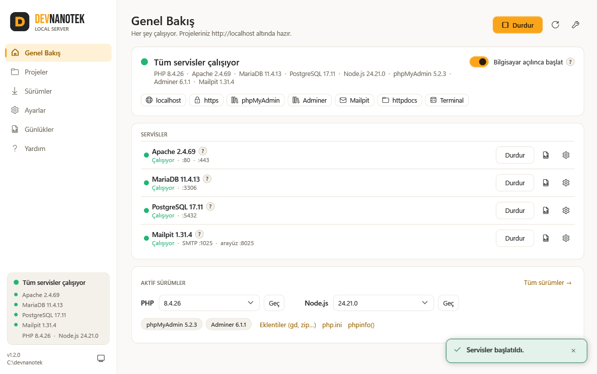

Çoklu PHP
PHP 7.4'ten 8.5'e istediğiniz kadar sürüm; tek tıkla geçiş. gd, zip, intl gibi eklentiler anahtarla açılıp kapanır.
Ücretsiz · Açık kaynak (MIT) · v1.2.0
XAMPP ve Laragon yerine: birden çok PHP sürümü, Apache veya Nginx, MariaDB, MySQL, PostgreSQL, phpMyAdmin, test e-postası ve HTTPS. Tek dosya, birkaç tıkla kurulum, lisans uyarısı yok.
Windows 10 / 11 · 64 bit, 32 bit, ARM64 · yönetici izni ve internet bağlantısı gerekir

Her bileşen resmi kaynağından indirilir ve gerçek Windows servisi olarak çalışır: program kapalıyken de siteleriniz açık kalır.
PHP 7.4'ten 8.5'e istediğiniz kadar sürüm; tek tıkla geçiş. gd, zip, intl gibi eklentiler anahtarla açılıp kapanır.
.htaccess ve mod_rewrite (cPanel / Plesk ile aynı). Alt klasörler: httpdocs\GITHUB\proje1 → localhost/GITHUB/proje1.
MariaDB veya MySQL, yanında PostgreSQL, SQLite ve SQL Server sürücüsü. phpMyAdmin ve hepsini yöneten Adminer.
mkcert ile https://localhost ve proje.test alan adları tarayıcıda yeşil kilitle açılır.
Mailpit: PHP'nin gönderdiği e-postalar gerçek alıcıya gitmez, tarayıcıda görünür.
Sunucuya göndermeden önce projeyi tarar: büyük/küçük harf, ters bölü, C:\ yolları, tablo adları, .htaccess php_value.
Yeni PHP, MariaDB, Node.js… sürümlerini ve DEVNANOTEK'in yeni sürümünü otomatik bulur; ÖNERİLEN sürümü gösterir, tek tıkla günceller.
Servisler yeşil / sarı / kırmızı. Saatin yanındaki simgeden başlat, durdur, sürümleri gör.
Hızlı onarımdan fabrika ayarlarına dört seviye. Kaldırınca servis, hosts, PATH, sertifika ve güvenlik duvarı kaydı bırakmaz.
node, npm, npx, composer, mysql, psql terminalde hazır. socket.io ve Vue/React derlemeleri için.
Gündüz / gece teması, açıklamalar ? simgelerinde, Türkçe kılavuz. Başlarken kurulum sihirbazı.
Bir exe; 64 / 32 bit ve ARM64'ü kendisi algılar. Ek kurulum gerektirmez (.NET 4.8 Windows'ta hazır).
Tek komutla kurulur; sonra devnanotek komutuyla yönetilir: PHP sürümü değiştirme, eklenti açma, alan adı ekleme, yedek alma, kaldırma.
curl -fsSLO https://github.com/devnanotek/local-server/releases/latest/download/devnanotek.sh && sudo bash devnanotek.sh install
Normal kullanıcınızla çalıştırın (sudo ile). Projeler /opt/devnanotek/httpdocs klasöründe, ~/httpdocs kısayoluyla.
Kurulu program yeni sürümü kendiliğinden görür ve tek tıkla güncellenir. Tüm dosyalar ve SHA256 özetleri GitHub Releases'tadır.
Sürümler yükleniyor…
Program ücretsiz olduğu için kod imzası yok. "Ek bilgi → Yine de çalıştır" ile açın. Dosyanın doğruluğunu sürüm sayfasındaki SHA256 özetiyle kontrol edebilirsiniz.
Akıllı Uygulama Denetimi (Smart App Control) açıksa imzasız programları engeller. Program bunu algılar ve nasıl kapatılacağını gösterir. Bu bir güvenlik ayarıdır; kararı siz verirsiniz.
Aynı portları (80, 443, 3306) kullandıkları için aynı anda çalışmazlar. Program çakışmayı gösterir; diğerini durdurun ya da Ayarlar'dan portu değiştirin.
Projeler C:\devnanotek\httpdocs, veritabanları C:\devnanotek\data klasöründe. Kaldırırken isterseniz ikisi de korunur.
Projeler → klasörü seçin → Linux uyumluluğu → Denetle. Sunucuda hata verecek şeyleri satır satır ve nasıl düzelteceğinizle gösterir.
Tamamen ücretsiz ve MIT lisanslı açık kaynak: kişisel ve ticari projelerde serbestçe kullanabilirsiniz.